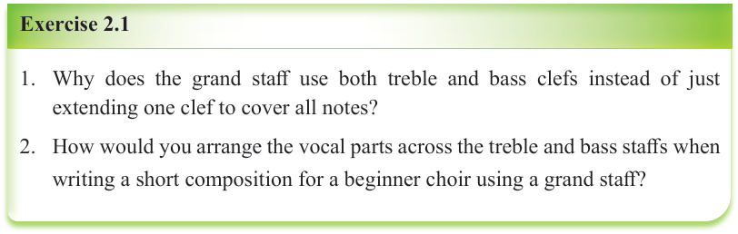
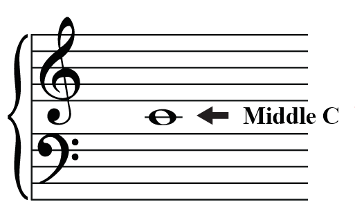
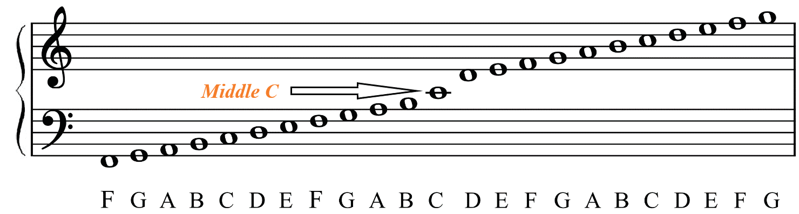

Exercise 2.1
Why does the grand staff use both treble and bass clefs instead of just extending one clef to cover all notes?
How would you arrange the vocal parts across the treble and bass staffs when writing a short composition for a beginner choir using a grand staff?
Identifying notes on the grand staff
You should be able to recognise the position of a middle C when identifying notes on the grand staff.
The middle C is the note found between the treble and bass staffs.
It is positioned on the first ledger line below the treble staff and the first ledger line above the bass staff as shown in Figure 2.8.
Note that the first ledger line below the treble staff is also the first ledger line above the bass staff.

Figure 2.8: The middle C positioned on a ledger line between the treble and bass staffs
Figure 2.9 shows note positions on the grand staff.

Figure 2.9: Notes on the grand staff
Figure 2.10 shows a piano keyboard that indicates the middle C and notes found in the bass and treble clefs.